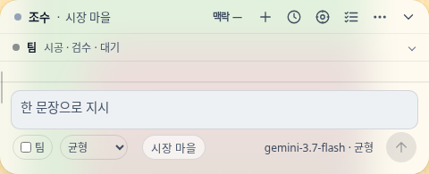
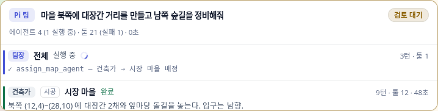
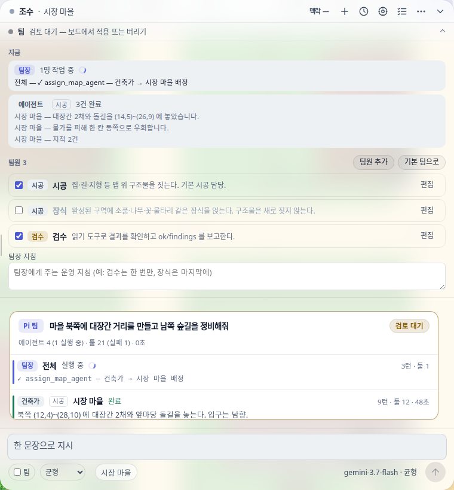
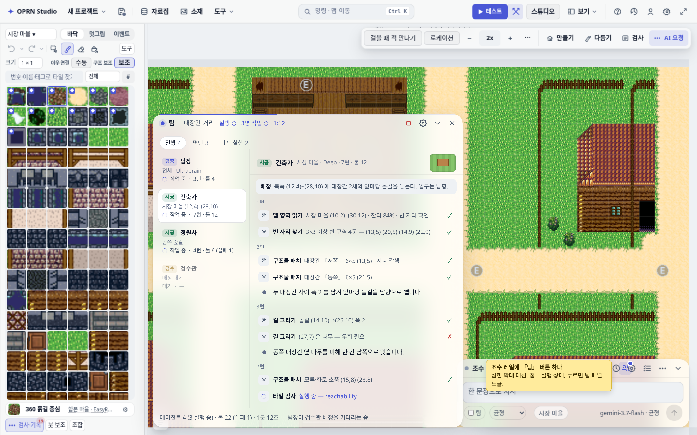
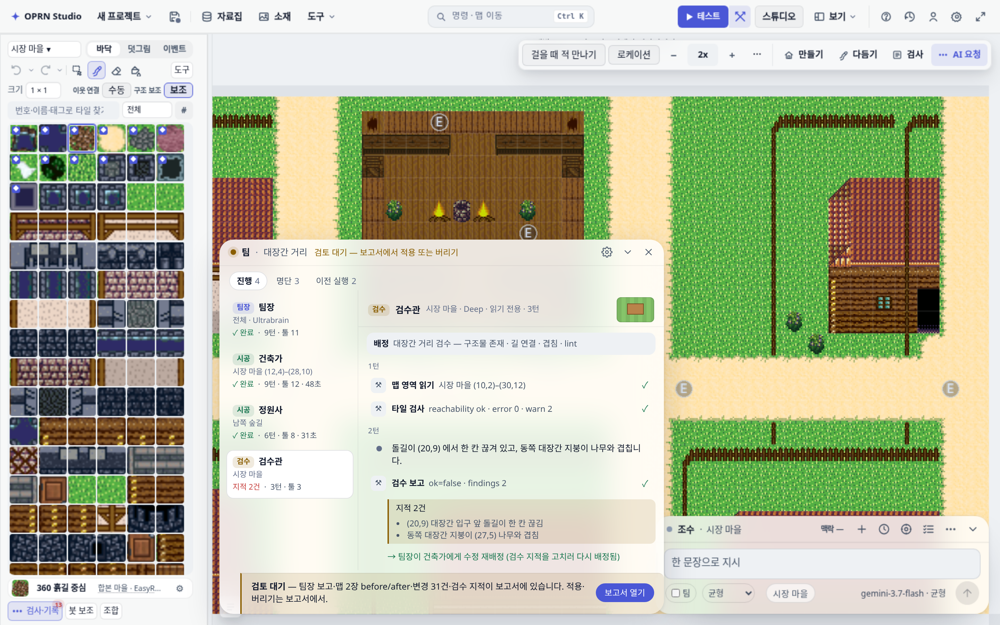
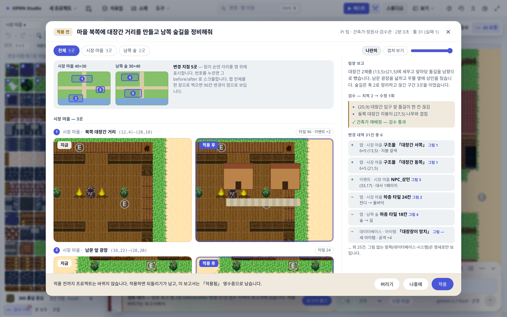
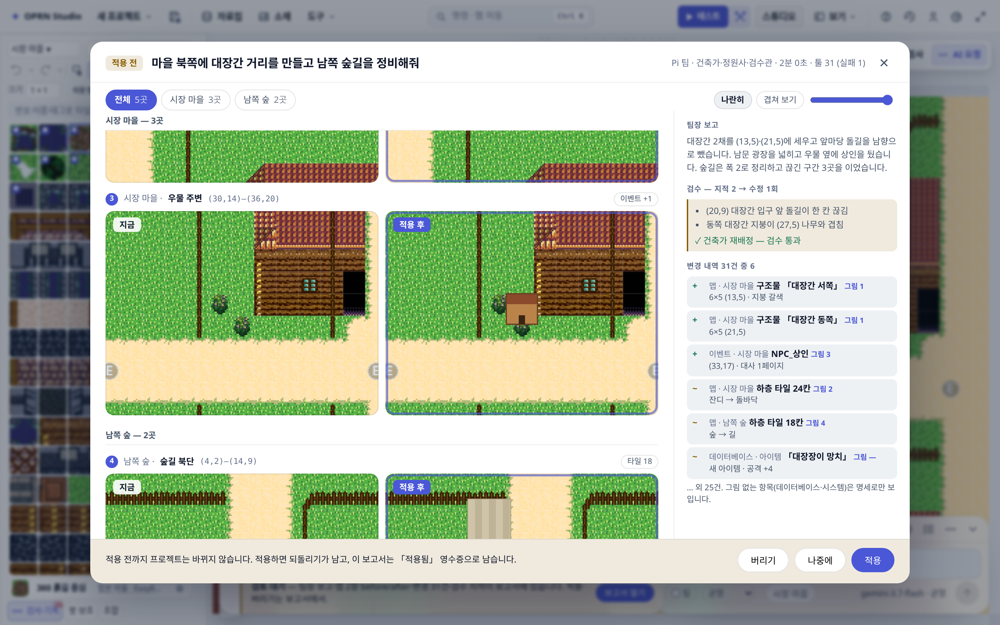
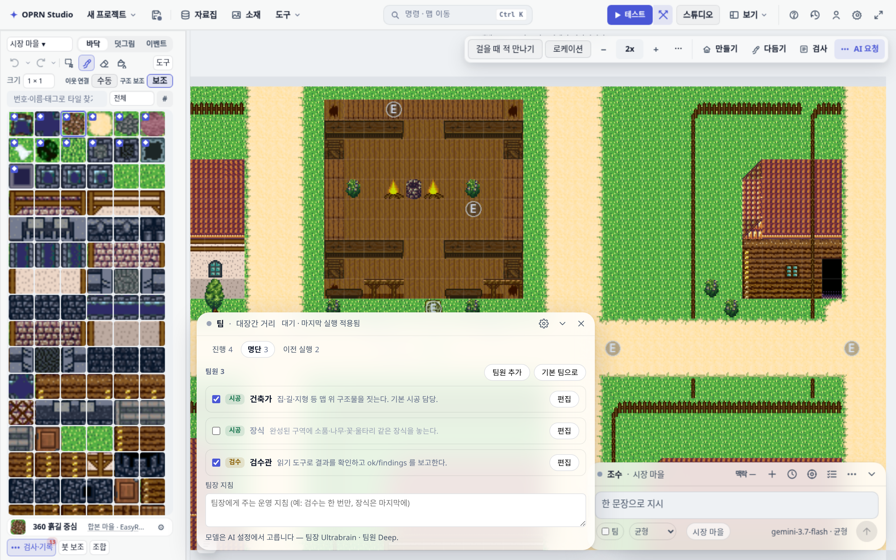
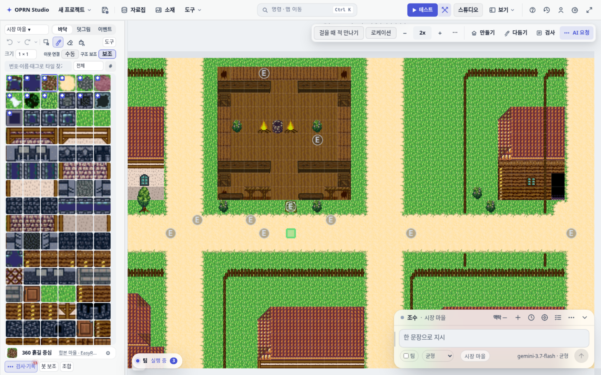
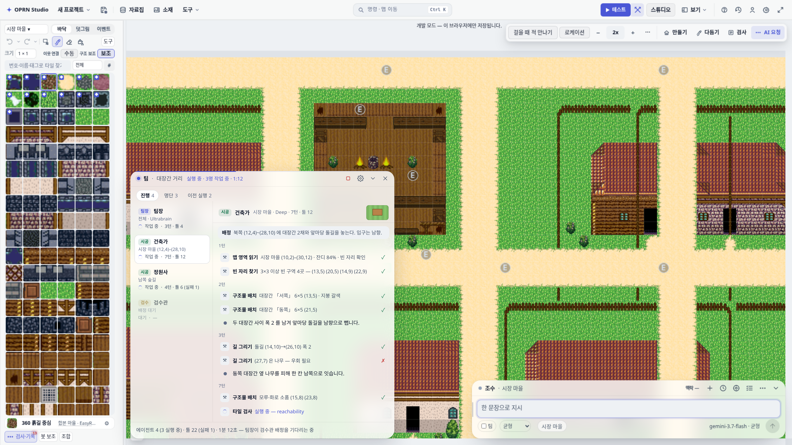

팀 데크 — 「팀원」에게 조수와 동급의 전용 패널을 준다
지금 팀원(Pi 팀)은 조수 데크 안에 접힌 막대 + 대화 로그 카드로 세 들어 산다. 이 계획은 팀원을 독립 플로팅 패널(팀 데크)로 승격해, 각 팀원이 지금 무슨 일을 하는지(툴콜·발화·검수까지의 전체 과정)를 실시간으로 보이게 한다.
lastLine 한 줄로 버려지던 팀원별 이벤트 스트림을 팀원별 트랜스크립트(상한 200행)로 쌓아 「명단 열 + 선택 팀원 과정 열」로 그린다. ③ 실행이 검토 대기에 닿으면 독립 「결과 보고서」 모달이 크게 열려 팀장 보고·변경 지점마다 한 쌍의 before/after(맵 여러 장, 맵 안 여러 곳)·변경 명세·검수 지적을 한 화면에 담고, 적용/버리기는 거기서 한다 — 기존 openWideChangeViewer를 키운다. ④ 조수 데크의 접힌 팀 막대는 레일 버튼 하나로, 로그의 팀 보드 카드는 한 줄 슬림 카드로 줄인다. 3단계로 나눠 각 단계가 독립 검증·독립 되돌림 가능.
1지금: 팀원이 조수 패널에 세 들어 산다 (전부 이 워크트리 실측)
팀 상태의 표면이 두 곳에 쪼개져 있다: 조수 데크 레일 아래의 접힌 막대(aiTeamPanel.ts)와 대화 로그 안의 팀 보드 카드(aiTeamBoard.ts). 데이터는 하나(teamActivity 버스)인데 표면이 둘이라, 어느 쪽도 온전하지 않다.


lastLine 하나만 남는다 — 과정이 안 보인다.
문제 요약
| 문제 | 실측 근거 |
|---|---|
| P1 — 과정이 안 보인다 | 팀원별 이벤트(툴 시작/끝·발화·턴)는 agent_event로 브라우저에 이미 전부 도착하지만(protocol.ts), 리듀서가 lastLine 한 줄로 덮어쓰며 버린다(teamBoardState.ts applyAgentEvent). "팀원이 뭘 하는지 보이게" 하려면 이 스트림을 쌓기만 하면 된다 — 데이터는 공짜다. |
| P2 — 표면이 조수 안에 갇혀 있다 | 막대를 펼치면 조수 대화가 밀려나고(위 캡처), 접으면 요약 한 줄. 팀을 보는 것과 조수와 대화하는 것이 같은 픽셀을 다툰다(aiChatPanel.ts:2721이 데크 children 에 직접 조립). |
| P3 — 같은 정보 두 벌 | 막대의 「지금」과 로그 보드 카드가 같은 TeamBoardState를 다르게 그린다. 검토(적용/버리기)는 카드에만 있다. |
| P4 — 카드는 로그와 함께 떠내려간다 | 보드 카드는 대화 로그의 한 항목이라, 대화가 이어지면 위로 밀려 사라진다. 실행이 10분짜리인데 관찰 표면이 스크롤 위치에 묶여 있다. |
| P5 — 설정과 관찰이 섞여 있다 | 팀원 명단 편집(설정)과 실행 관찰(라이브)이 같은 서랍 안에 세로로 쌓인다 — 관찰하려고 열면 편집 폼이 자리를 먹는다. |
2제안: 팀 데크 — 조수와 동급의 독립 패널
조수 데크와 같은 유리(글래스) 문법의 플로팅 패널을 좌하단에 새로 둔다(조수는 우하단). 기본 폭 640px(조수 열린 폭 760 과 같은 급), 높이는 호스트의 72% 까지 — 팀원 4명의 명단과 툴 행 12–14줄이 스크롤 없이 들어가는 크기다. 팀 실행이 시작되면 스스로 열리고, 팀원 하나를 고르면 그 팀원의 전체 과정이 흐른다. 아래는 실측 편집기 화면 위에 그린 목업이다.



openWideChangeViewer 그대로(겹쳐 보기 슬라이더는 쌍별). 오른쪽 열: 팀장 보고문(team_report) · 검수 지적 → 수정 이력 · 변경 명세(기존 ChangeLedger) — 항목마다 「그림 N」 핀이 붙어 어느 사진이 그 변경인지 잇는다; 그림 없는 항목(데이터베이스·시스템)은 「그림 —」. 발: 버리기 · 나중에 · 적용. 적용하면 같은 모달이 「적용됨」 영수증으로 바뀌고 되돌리기가 붙는다.

aiTeamPanel.ts의 명단 편집(추가·끄기·편집·기본 팀·팀장 지침)을 폼째 이관 — 관찰(진행 탭)과 설정(명단 탭)을 탭으로 가른다. 「이전 실행」 탭은 후속 범위.

정보 구조
- 트랜스크립트 행 어휘는 조수 작업 타임라인과 같다 — 툴 행은 「칩 · 한국어 라벨(
aiToolLabels) · 요약 · ✓/✗」, 함수 원명은title. 새 어휘를 만들지 않는다. - 「/pi」는 별도 경로가 아니다 — 컴포저 평문이 곧 Pi 다.
aiChatPanel.ts:1937의plainPiCommand(text, team ? "team" : "single", …)이 모든 평문을 Pi 로 보내고,/pi …는 같은 것의 명시 표기일 뿐이다(위키 「조수 채팅은 Pi 하나다」). 따라서 남는 축은 팀 토글(AiConfig.piTeam) on/off 하나다. 팀 데크는 두 모드 모두를 그린다(publishTeamActivity는 단독 모드도 게시 — 단독도 계획·실행·검수 3명이다). 자동 열림만 팀 토글 on 으로 제한한다(§3 D5). - 검수 행은 결과가 아니라 과정 — 지적이 나오면 「→ 수정 재배정」으로 다음 시공 행과 잇는다(기존
fixOf배선 재사용).
3설계 결정 5 — 무엇을 골랐고 무엇을 버렸나
| 대안 | 판정 |
|---|---|
독립 float 패널 — chatFloatHost(캔버스 위 inset:0 오버레이, pointer-events:none + 자식만 auto)에 형제로 마운트 | 채택. 조수와 같은 문법(유리·드래그·접힘·z-order)을 그대로 쓰고, 캔버스 레이아웃 재계산(fitCanvas)을 건드리지 않는다. |
워크스페이스 도크 등록 (panelRegistry.ts에 4번째 PanelId) | 기각. 좌 도크는 grid-template-rows 계약(자리마다 성격이 다름)에 묶여 있고, assistant조차 도크가 만들지 않는 외부 소유다. 도크 승격은 CSS 게이트 38곳과 얽혀 검증 단위가 커진다 — 후속. |
| 조수 데크 안 탭/서랍 확장 (현행 개선) | 기각. P2(같은 픽셀 다툼)가 그대로 남는다 — 사용자가 지적한 바로 그 문제. |
크기. 기본 폭 640px (최소 480, 최대 호스트−조수 컴팩트 480−여백 48 → 1440 에서 596, 1920 에서 640). 높이는 max-height: 72% 로 내용에 따라 자라고, 폭은 오른쪽 모서리 드래그로 바꾸며 oprn:ai-team-deck-size 에 저장한다(조수의 aiChatResizeChrome.ts 계약 재사용). 겹침 규칙: 팀 데크가 열리면 조수 데크는 컴포저에 포커스가 없는 동안 컴팩트 폭(480, 지금의 유휴 규칙과 같은 클래스 스위치)으로 물러난다. 조수에 포커스가 가서 760 으로 펴지면 겹칠 수 있고 — 그때는 마지막 상호작용 패널이 위로 온다. 자동으로 위치를 옮기지는 않는다(§8 Q4).
위치. 조수가 right/bottom 앵커(우하단)이므로 팀은 좌하단 — 내용이 자라면 위로 큰다. 드래그는 aiDeckMoveChrome.ts를 파라미터화(저장 키·CSS 변수·앵커 축·힌트 문구를 deps 로)해 재사용한다: 3px 임계값, 릴리스 하나(pointerup·pointercancel·blur·buttons===0), 호스트 기준 클램프, 더블클릭 리셋 — 이 계약들은 실측 회귀로 얻은 것이라 두 번째 구현을 만들면 같은 버그를 다시 산다. 저장 키: oprn:ai-team-deck-pos · oprn:ai-team-deck-state(open/collapsed/closed).
teamActivity 버스 하나 + 리듀서에 트랜스크립트만 추가
aiPiAgentCommand.ts의 push → reduceTeamBoard → publishTeamActivity 파이프는 그대로다. TeamBoardAgent에 log: readonly TeamAgentLogEntry[](kind: task|turn|tool|text|error|review|done, 상한 200행/팀원 + 넘친 수)를 추가하고 applyAgentEvent에서 append 한다. 팀 데크는 구독만 한다 — 실행 로직·이벤트 배선 무변경. 로그 보드 카드와 팀 데크가 같은 상태를 그리므로 두 벌 상태 위험이 없다.
before/after 는 보고서다: 팀이 2분 동안 한 일을 사용자가 읽고 판단하는 문서. 데크 푸터에 끼우면 작은 두 장이 되고, 로그 카드는 대화와 함께 떠내려간다. 그래서 검토 대기에 닿으면 편집기 위에 크게(1180×780, 화면−80 클램프) 모달을 띄워 시선을 옮긴다. 이미 있는 openWideChangeViewer(body 오버레이, 나란히/겹쳐 보기 + 슬라이더, Escape·배경 클릭 닫기, 넓은 명세 구획)를 확장한다 — 새로 짓지 않는다:
- 추가되는 것: 맵 탭(변경된 맵마다, 각각
ChangePreviewInput하나) · 오른쪽 열(팀장 보고문team_report· 검수 지적→수정 이력 ·ChangeLedger명세) · 발의 버리기 / 나중에 / 적용 슬롯 · 「적용 전 → 적용됨」 상태 전이(적용 후 같은 모달이 영수증으로 남고 되돌리기가 붙음) ·installAiModalFocus포커스 트랩. - 적용/버리기는 보고서에만 있다(결정 자리는 하나). 「나중에」로 닫으면 팀 데크 푸터의 「보고서 열기」와 조수 로그의 슬림 카드가 다시 여는 손잡이다. 데크 레일은 attention 점을 유지한다.
- 자동 열림은 검토 대기 시점 한 번. 컴포저에서 IME 조합 중이면 조합이 끝난 뒤 연다. 「팀 보고서 자동 열기」 설정 토글(기본 켬)로 끌 수 있고, 끄면 데크 푸터·슬림 카드가 알린다.
- 단독 모드(팀 토글 off)의 검토도 같은 모달을 쓴다 — 지금의 검토 카드(
board.setReview({preview}))가 넘기는 재료가 그대로 입력이 된다. 그러면 「부탁했는데 before/after 가 안 보인다」(위키 2026-09-14 항목)의 두 번째 자리도 함께 닫힌다.
지금은 두 곳에서 잃는다(이 워크트리 실측):
aiPiAgentCommand.ts:343—receiptMapId = changedKeys.find(key => key.startsWith("maps.")). 바뀜 맵 중 첫 번째 한 장만 그린다. 시장 마을과 남쪽 숲을 같이 고치믴 남쪽 숲은 사진이 없다 — 칩 한 줄에만 남는다.aiProposalCard.ts:72computeMapTileChangeBounds— 한 맵의 바뀜 칸을 사각형 하나로 감싼다. 북쪽 대장간(12,4)과 남문 광장(10,22)을 같이 고치면 bbox 가 맵 절반이 되고, 두 사진은 바뀜 것이 점처럼 보이는 이미지가 된다. 사진이 나오긴 하나 읽을 수 없다.
해법 — 변경 지점(change site) 계산을 독립 모듈로. 신규 src/project/changeSites.ts: computeChangeSites(before, after) → ChangeSite[]. 순수 함수, DOM 없음, changeLedger.ts 옆에 선다.
| 단계 | 규칙 |
|---|---|
| 1 바뀜 칸 수집 | 맵별로 하층·상층 타일 diff + 이벤트 추가·삭제·이동 좌표(이동은 이전·이후 둘 다). computeMapTileChangeBounds 가 보는 것과 같은 입력 — 기존 함수는 이 모듈 위의 「지점 전체 감싸기」로 다시 표현해 호환 유지. |
| 2 근접 군집 | 간격 ≤ 3칸이면 같은 지점(변경 칸을 3칸 팝창 후 연결 성분 라벨링 — O(맵 크기), 100×100 맵에서 1ms 급). 길 하나는 지점 하나, 길 양쪽 끝의 건물은 길과 이어져 같은 지점. |
| 3 감싸기 | 지점별 bbox + 여백 2칸. 최소 창 10×8(한 칸 바뀌어도 주변이 보여야 읽힌다 — 지점 ③ 우물의 NPC 한 명이 그 예). 감싼 뒤 겹치는 사각형은 합친다. |
| 4 순서·상한 | 맵 순서는 바뀜 칸 수 내림차순, 맵 안은 읽기 순서(위→아래, 왼→오). 보고서에 그림은 맵당 8곳, 전체 16곳까지; 넘치면 작은 지점부터 「외 N곳」으로 접고 미니맵에는 전부 표시(조용한 절단 금지 — ChangeLedger.total 계약과 같다). |
| 5 명세 연결 | ChangeLedgerEntry 에 좌표가 있으면(이벤트·구조물) 포함되는 지점 번호를 붙인다 → 「그림 N」 핀. 맵 외 항목(데이터베이스·시스템)은 그림이 없다 — 명세로만. |
| 6 개요 미니맵 | 바뀜 맵마다 맵 전체를 renderRegionSnapshot(targetWidth 150)로 한 장, 위에 지점 사각형 + 번호 오버레이. 클릭 → 쌍으로 스크롤. 「어디가 바뀌었나」는 이 한 줄이 답한다. |
입력 형태. ChangePreviewInput 에 sites?: readonly ChangeSite[] 를 더한다. 보고서 모달은 전부 그린다. 인라인 카드(로그 영수증)는 첫 지점 한 쌍 + 「변경 지점 5곳 — 보고서」 칩으로 작게 유지한다(로그에 사진 다섯 쌍은 과하다). aiPiAgentCommand.ts 는 receiptMapId 대신 sites 를 넘기므로 자동 적용 영수증도 같이 고쳐진다 — 함수 하나 고쳐 세 자리(검토 카드·영수증·보고서)가 같이 맞는다.
렌더 뱄용. 지점 N × 사진 2 = 캨버스 2N. 쌍은 IntersectionObserver 로 보일 때 그리고 동시 렌더 4개로 제한. 상한 16곳이므로 최악 32장, 지금 카드 한 장이 2장을 그리는 것과 같은 경로다.
모든 턴이 Pi 이므로 「/pi 냐 아니냐」는 기준이 될 수 없다. 기준은 팀 토글이다: 팀 토글 on 으로 시작한 턴은 데크를 자동으로 연다(AI 설정 「팀 패널 자동 열기」, 기본 켬). 팀 토글 off 의 단독 턴(계획·실행·검수 3명)은 매 지시마다 640px 데크가 튀어나오면 소음이라 자동으로 열지 않고, 데크가 이미 열려 있으면 그 실행을 그대로 그린다. 레일 「팀」 버튼의 점은 두 모드 모두 실행 상태를 보인다. 수동 진입은 세 곳: 조수 레일의 「팀」 버튼, 컴포저 「팀」 토글 옆, 커맨드 팔레트. 닫기(×)는 「이번 실행 동안 다시 안 열림」, 접기는 알약. 실행이 끝나도 스스로 닫지 않는다.
4구현 3단계 — 각 단계가 독립 검증·독립 되돌림
1단계팀 데크 셸 + 진행 탭 — 순수 추가, 기존 표면 무변경
teamBoardState.ts:TeamAgentLogEntry+ 상한 200 append (리듀서 순수성 유지, 유닛으로 고정).- 신규
aiTeamDeck.ts(셸: 레일·탭·명단 열·푸터·알약·자동 열림) +aiTeamTranscript.ts(행 렌더) +22-team-deck.css(토큰만,!important0). aiDeckMoveChrome.ts파라미터화(기본값 = 조수 현행) —test/aiDeckMove.test.ts20건 무수정 통과가 리팩터 증명.editor.ts:chatFloatHost에 형제 마운트.aiChatPanel.ts: 레일에 「팀」 토글 버튼(아이콘users를aiDeckIcons에 추가).- 이 단계에서 접힌 막대·보드 카드는 그대로 산다(병행) — 새 패널이 실패해도 잃는 것이 없다.
검증: 유닛(트랜스크립트 축적·자동 열림·상태 전이) + npm run gates + QA 스크립트(아래 §7).
2단계결과 보고서 모달 — openWideChangeViewer 확장
- 신규
aiTeamReportModal.ts: 뷰어의 머리·모드·슬라이더·명세 구획을 재사용하고 맵 탭 · 오른쪽 열(팀장 보고·검수 이력·명세) · 발 액션 슬롯(버리기/나중에/적용) · 「적용 전→적용됨」 전이를 얹는다.aiChangePreview.ts는 뷰어 본체를 조립 가능한 조각으로 나누는 정도만 손댄다(기존 「넓게 보기」 버튼 동작 무변경). aiPiAgentCommand.ts:board.setReview가 넘기는 재료(preview·onApply·onDiscard)를 보고서 모달에도 넘긴다. 이 단계에서는 로그의 검토 카드도 그대로 산다 — 카드의 「넓게 보기」가 같은 보고서를 연다(두 손잡이, 한 결정 자리).- 검토 대기 시 자동 열림(팀·단독 공통, 설정 토글) + 팀 데크 푸터 「보고서 열기」 + Escape/나중에.
- 신규
src/project/changeSites.ts+test/changeSites.test.ts— 군집(간격 3·최소 창·병합·상한·순서·이벤트 이동 둘 다 포함·명세 핀)을 고정 테이블로 먼저 쓴다.computeMapTileChangeBounds는 지점 전체 감싸기로 재표현(기존 테스트 무수정). aiPiAgentCommand.ts:receiptMapId(첫 맵 한 장) →sites(전부). 검토 카드·영수증·보고서가 같은 입력을 받는다.- 신규
23-team-report.css(토큰만). 테스트: 맵 탭 전환·개요 번호 클릭 → 스크롤·지연 렌더·적용 후 상태 전이·나중에 후 재열기·포커스 트랩.
3단계정리 — 명단 이관 · 팀 막대 제거 · 로그 카드 슬림화
aiTeamPanel.ts의 명단·편집 폼·팀장 지침을aiTeamRoster.ts로 추출해 「명단」 탭에 마운트(테스트드 유지:ai-team-member*,ai-team-form-*).aiChatPanel.ts에서createTeamPanel제거,is-team-open클래스·21-team-panel.css의 데크 폭 규칙 제거.aiTeamBoard.ts슬림 변형: 「Pi 팀 배지 · 지시 · 상태 · 팀 패널에서 보기 → · 보고서 열기」 한 줄. 검토 카드의 인라인 before/after 는 이때 빠진다(보고서가 소유). 대화 기록 복원 시에도 슬림 카드가 남는다.- 갱신:
piAgentTeamBoardRender.test.ts(팀 패널 「지금」 절) ·aiPiTeamSetting.test.ts· 팀 막대를 참조하는 e2e.
후속 (이번 범위 밖) 「이전 실행」 탭(startPiRunLog 원장 재사용) · 워크스페이스 도크 등록 · 조수 일반 턴의 서브에이전트 표시 · 팀원 행에서 해당 맵으로 카메라 점프.
5파일 지도
| 파일 | 구분 | 내용 |
|---|---|---|
src/ai/piAgent/teamBoardState.ts | 수정 1 | TeamAgentLogEntry · 행별 log(상한 200) · droppedLog 계수 |
src/editor/panels/aiTeamDeck.ts | 신규 1 | 셸 — 레일·탭·팀원 열·푸터·알약·자동 열림. subscribeTeamActivity 구독만 |
src/editor/panels/aiTeamTranscript.ts | 신규 1 | 트랜스크립트 행 렌더 — toolLabel·plainLine 재사용 |
src/styles/database/tabs-b-assistant-panel/22-team-deck.css | 신규 1 | 토큰만 · !important 0 · --ai-font-scale 스케일 |
src/editor/panels/aiDeckMoveChrome.ts | 수정 1 | 저장 키·CSS 변수·앵커 축·힌트 파라미터화(기본값 = 조수). 기존 테스트 무수정 |
src/editor/panels/aiPanelLayout.ts | 수정 1 | oprn:ai-team-deck-pos·-state load/save/clear |
src/editor/panels/editor.ts · aiChatPanel.ts · aiDeckIcons.ts | 수정 1 | 형제 마운트 · 레일 「팀」 버튼 · users 아이콘 |
src/project/changeSites.ts · test/changeSites.test.ts | 신규 2 | computeChangeSites(before, after) — 바뀜 칸 군집 → 지점별 사각형·칸 수·이벤트 수·명세 핀. 순수 함수 |
src/editor/panels/aiProposalCard.ts | 수정 2 | computeMapTileChangeBounds 를 지점 전체 감싸기로 재표현(공개 시그니처·결과 무변경) |
src/editor/panels/aiTeamReportModal.ts | 신규 2 | 결과 보고서 모달 — 탭(전체/맵별 + 곳 수)·개요 미니맵·지점별 쌍 목록(지연 렌더)·오른쪽 열·액션 슬롯·적용 전/적용됨 전이. openWideChangeViewer 조각 재사용 |
src/editor/panels/aiChangePreview.ts | 수정 2 | 뷰어 본체를 조립 조각으로 분리(머리·모드·슬라이더·두 장·명세). 카드의 「넓게 보기」 동작 무변경 |
src/styles/database/tabs-b-assistant-panel/23-team-report.css | 신규 2 | 모달 레이아웃 — 토큰만, 화면−80 클램프 |
src/editor/panels/aiPiAgentCommand.ts | 수정 2 | setReview 재료를 보고서 모달에도 전달 · 검토 대기 자동 열림 |
src/editor/panels/aiTeamRoster.ts | 신규 3 | aiTeamPanel.ts에서 명단·폼 추출(테스트드 유지) |
src/editor/panels/aiTeamPanel.ts · 21-team-panel.css | 삭제 3 | 접힌 막대 제거 — 명단은 데크 탭으로, 요약은 레일 버튼 점으로 |
src/editor/panels/aiTeamBoard.ts | 수정 3 | 슬림 카드 변형 · 인라인 before/after 제거(보고서가 소유) |
test/ — teamBoardState(신규 절)·aiTeamDeck(신규)·aiTeamTranscript(신규)·piAgentTeamBoardRender·aiPiTeamSetting·aiDeckMove | 테스트 | 단계별 표 — §7 |
scripts/qa/team-deck-qa.mjs · openwiki/editor-ai-panel.md | 신규 | 브라우저 QA · 위키 절(같은 변경 안에서 갱신 — AGENTS.md 규칙) |
6리스크와 완화
| 리스크 | 완화 |
|---|---|
| R1 · 드래그 크롬 리팩터가 조수를 깬다 | 파라미터의 기본값을 현행 조수 값으로 두는 순수 리팩터를 먼저 별 커밋으로 — test/aiDeckMove.test.ts 20건과 scripts/qa/assistant-deck-move-qa.mjs 18개 실측이 무수정으로 통과해야 다음으로 간다. |
| R2 · 좁은 창에서 두 패널이 겹친다 | 1440 기본 위치는 겹치지 않음(목업 ①). max-width: calc(50% - inset) 클램프 + 마지막 상호작용 패널을 위로(z 토글) + 접힘 알약. 1280·1440·1920 QA 실측을 게이트에 포함. |
| R3 · 트랜스크립트 메모리·렌더 비용 | 행 상한 200/팀원(넘친 수 표시) · plainLine 절단 · 라이브 갱신은 선택 팀원 열만 다시 그림(조수 작업 타임라인의 「전체 재렌더 금지」 계약과 동일). |
| R4 · 상태 두 벌 | 상태 생산자는 aiPiAgentCommand.ts 하나, 소비자(보드 카드·팀 데크)는 같은 버스 구독 — 이미 있는 구조를 그대로 쓴다. |
| R5 · 보고서 모달이 작업을 가로막는다 | 여는 시점은 검토 대기 한 번(실행이 끝난 순간이라 사용자 작업과 충돌하지 않음) · 「나중에」·Escape·배경 클릭으로 즉시 닫힘 · IME 조합 중이면 미룸 · 설정 토글로 끔. 2단계에서는 기존 검토 카드도 살아 있어 모달을 꺼도 결정 경로가 끊기지 않는다. |
| R8 · 군집이 어지간하게 나눠지거나 맵 전체가 한 지점이 된다 | 간격 3은 고정 테이블(대장간 2채+길 = 1곳, 서로 10칸 떨어진 집 2처 = 2곳, 맵을 가로지르는 길 = 1곳)로 먼저 고정. 큰 지점은 쌍이 맵 절반을 그리게 되는데 그건 맞는 그림이다(길 하나를 놓은 것) — 미니맵이 범위를 보인다. 간격은 상수 하나라 실측 후 조정 가능. |
R7 · openWideChangeViewer 분해가 「넓게 보기」를 깬다 | 조각 분리는 순수 리팩터로 먼저(카드 「넓게 보기」 e2e 캡처 전후 동일) · ai-change-wide-* 테스트드 유지 · 새 기능은 모달 파일에서만. |
| R6 · CSS 예산·게이트 | 새 CSS 는 토큰만·!important 0. npm run gates -- --only css 기준선 대비 통과. 기준선이 빨간 저장소라 새 실패만 회귀로 본다(quickstart §2). |
7검증 계획
- 유닛 —
teamBoardState: 로그 축적·상한·검수/재배정 연결.aiTeamDeck: 자동 열림(팀 2+만)·접힘/닫기 상태 저장·팀원 선택·attention 전이.aiTeamTranscript: 행 어휘·실패 행·라이브 행 승계. 비동기 는 상태 신호 구독으로 — 고정 sleep 금지. - 게이트 —
npm run typecheck:app(기준선 0) ·npm test -- test/aiTeamDeck.test.ts test/teamBoardState…·npm run gates(기준선 비교). 파이프 종료 코드는 증거로 쓰지 않는다. - 브라우저 QA —
scripts/qa/team-deck-qa.mjs: 자동 열림 → 팀원 선택 → 트랜스크립트 축적 → 드래그·재로드 복원 → 접힘 알약 → 검토 대기 attention → 적용. 1280/1440/1920 각각 캡처, 산출물output/evidence/team-deck/. - 이 문서의 자산 재현 — dev 서버 후
node docs/2026-09-14-team-panel-plan-assets/capture-current.mjs(현재 실측) ·capture-base.mjs+render-mock.mjs(목업 합성).
8열린 질문 — 구현 전 결정 포인트
| 질문 | 기본값(추천) |
|---|---|
| Q1 · | — |
| Q2 · 팀 토글 on 턴의 팀 데크 자동 열림 기본값? | 켬 (AI 설정 토글로 끔) |
| Q3 · 팀 토글 off 인 단독 턴(계획·실행·검수 3명)도 팀 데크를 자동으로 열까? (모든 턴이 Pi 이므로 「/pi 냐」가 아니라 「팀 토글이냐」가 기준) | 안 열음 — 매 지시마다 640px 가 튀면 소음. 이미 열려 있으면 따라가고, 레일 점으로 알린다 |
| Q5 · 보고서 모달 자동 열림 — 팀 턴만? 단독 턴도? | 둘 다 — before/after 는 모드와 무관한 결정 자리. 단독 턴의 변경-0(질문·계획)은 검토 대기가 아니므로 열리지 않는다 |
| Q7 · 변경 지점 그림 상한 — 맵당 8 / 전체 16 이면 충분한가? 넘치는 것은 「외 N곳」 + 미니맵 표시만 | 그렇게 — 100×100 마을 생성처럼 지점이 수십 곳이면 사진은 더 이상 정보가 아니다. 미니맵 + 명세가 본문이 된다 |
| Q6 · 보고서 크기 — 큰 창(1180×780, 화면−80) vs 전체 화면? | 큰 창 + 어두운 배경 — 편집기 문맥이 뒤에 비쳐 「어느 프로젝트의 보고서인가」가 유지된다 |
| Q4 · 조수 데크와 겹칠 때 자동 회피(위치 재계산)? | 안 함 — 드래그·접힘·z-order 로 해결(자동 이동은 위치 저장과 싸운다) |
자산: docs/2026-09-14-team-panel-plan-assets/ — current/(이 워크트리 dev 서버 실측 9장) · base/(합성 바탕) · mock/team-deck.html(목업 원본) · proposed/(합성 5장). 목업은 실측 편집기 스크린샷 위에 tokens.css 값으로 그린 합성이다 — 구현물이 아니다.